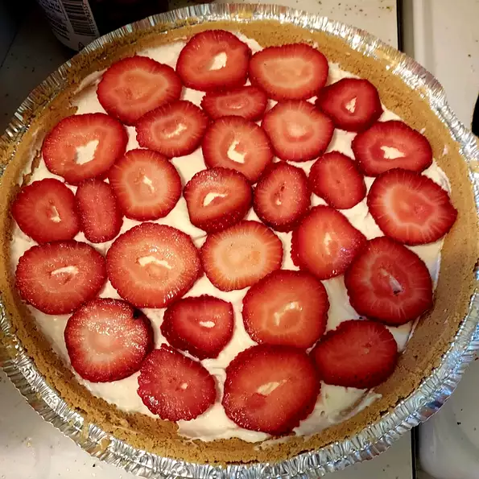

Strawberry Cheesecake

Description
Ingredients
- 3/4 cup graham cracker crumbs
- 3 tablespoons melted butter
- 1/4 teaspoon ground cinnamon
- 1/4 teaspoon ground nutmeg
- 1 (8 ounce) package of cream cheese, softened
- 1 1/2 cups milk
- 1 (1 ounce) package cheesecake flavor sugar-free instant pudding mix
- 2 pints fresh strawberries
Steps
- Mix together graham cracker crumbs, melted butter, and nutmeg in a bowl.
- Press the mixture into an 8-inch pie dish. Refrigerate while making filling.
- Beat cream cheese in a mixing bowl with an electic mixer on medium speed until softened, reduce the speed to low, and gradually beat in milk, a little at a time (mixture will be watery). Use a rubber spatula to scrape cream cheese from the sides of the bowl, if necessary.
- Beat in pudding mix until the filling is thick and smooth.
- Spoon half of the cream cheese filling into the bottom of the graham cracker crust
- Spead half the strawberries over the filling.
- Repeat cheesecake layer and strawberry layer.
- Chill pie in refrigerator until sset and cold, at least 1 hour.